Budget with Anchors
Helps users stick to their budgets by setting spending limits for different spending categories.
A mobile app offering a fun way to stick to your budget and plan your future purchases.
Finance Made Fun,
Anchored for You!
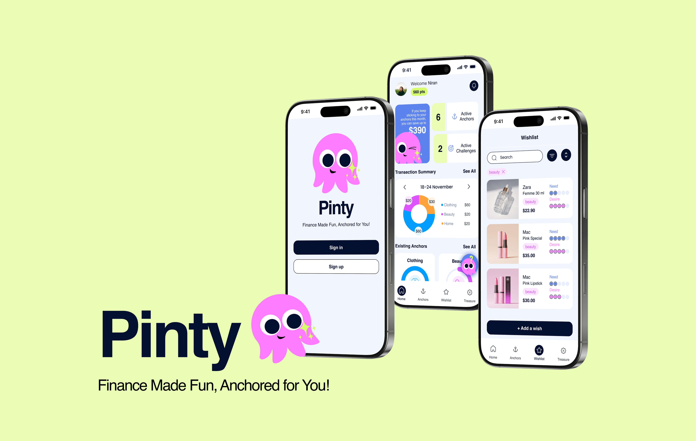
Pinty is a personal finance management app that helps users stick to their budgets through spending anchors and plan future purchases through a wishlist.
The experience encourages healthier shopping habits while making financial decisions more engaging through a playful octopus mascot.
Helps users stick to their budgets by setting spending limits for different spending categories.
Allows users to plan future purchases through a wishlist.
A playful octopus mascot guides users through financial decisions and encourages healthier shopping habits.
Detailed desk research and understanding the target user
Defining the problem statement
Exploring use cases through journey mapping and personas
Creating and testing information architecture and user flows through detailed wireframing
The project began with a detailed research process during the first three weeks. It continued with journey mapping, exploration of edge cases, feature definition, information architecture, wireframing and UI development.
Usability testing was conducted after prototyping, and the product was revised and refined accordingly.
Interview Participants
Survey Participants
Target group
years old
Due to the economic situation in Turkey, most participants tended to purchase what they needed immediately.
Although participants used tools such as Excel for budget planning, they struggled to stick to those plans due to a lack of motivation.
Among participants using mobile banking apps, setting a credit-card limit was the most-used personal finance management feature.
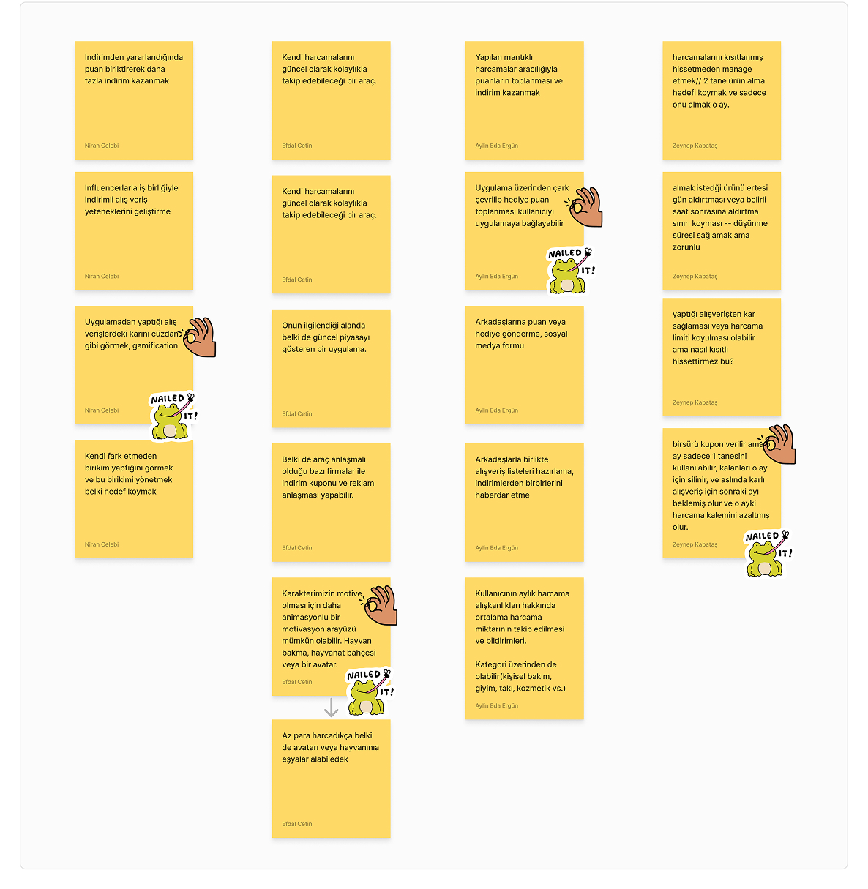
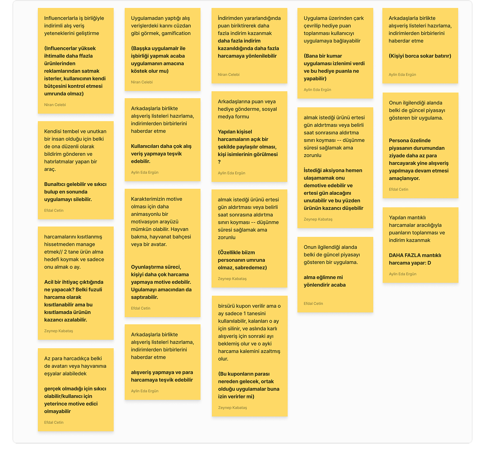
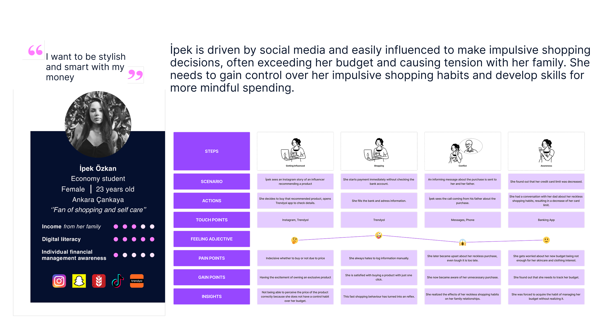
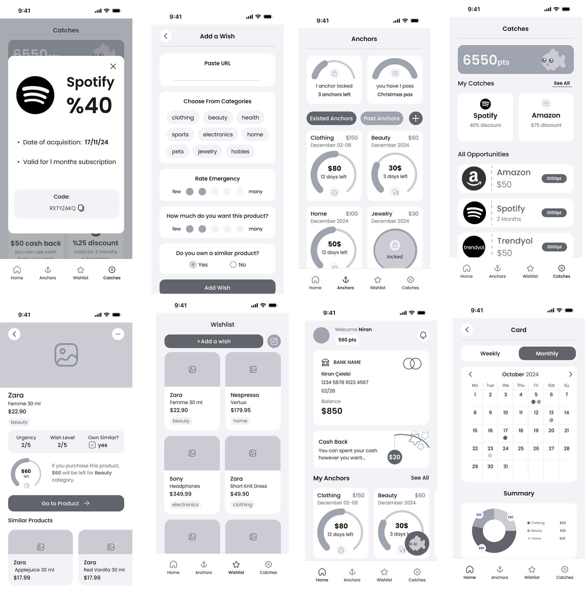
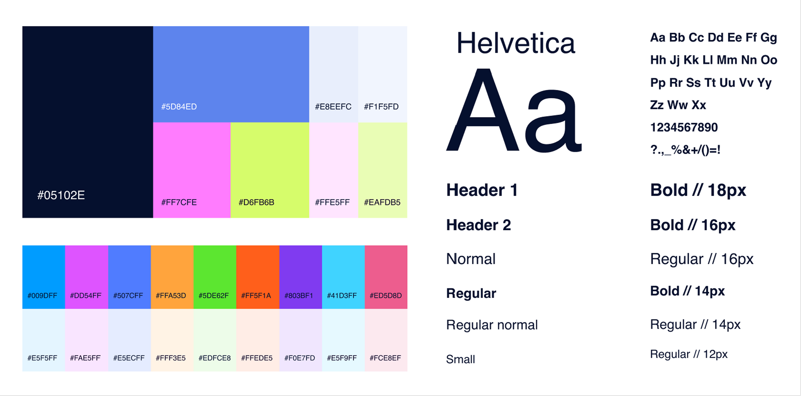
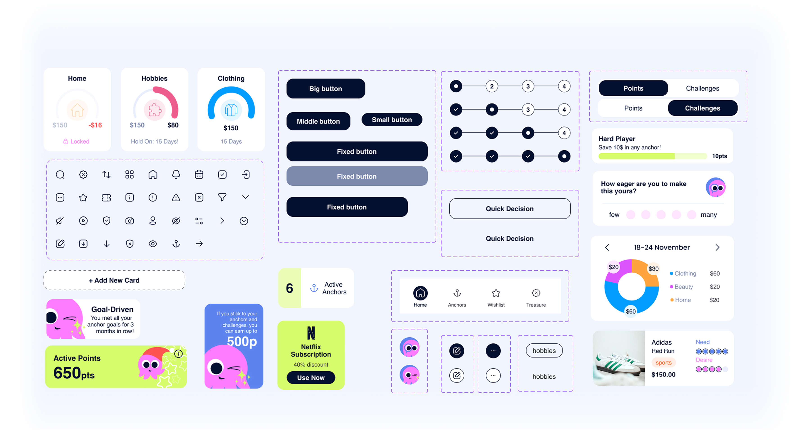
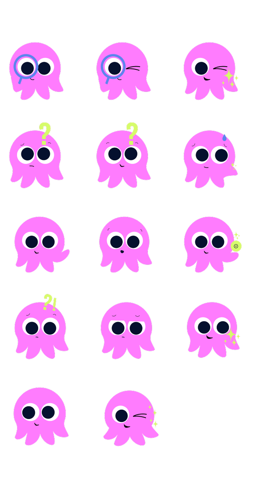
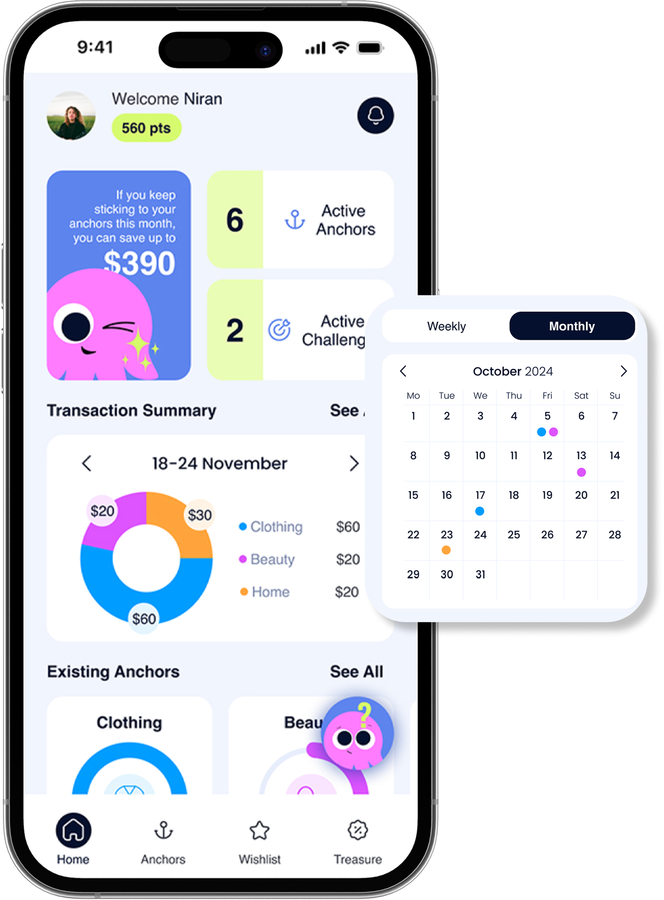
Provides a general overview of potential savings, expenses, and existing spending anchors.
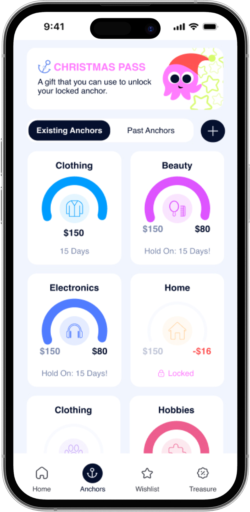
Displays the spending categories where users have set their budget limits.
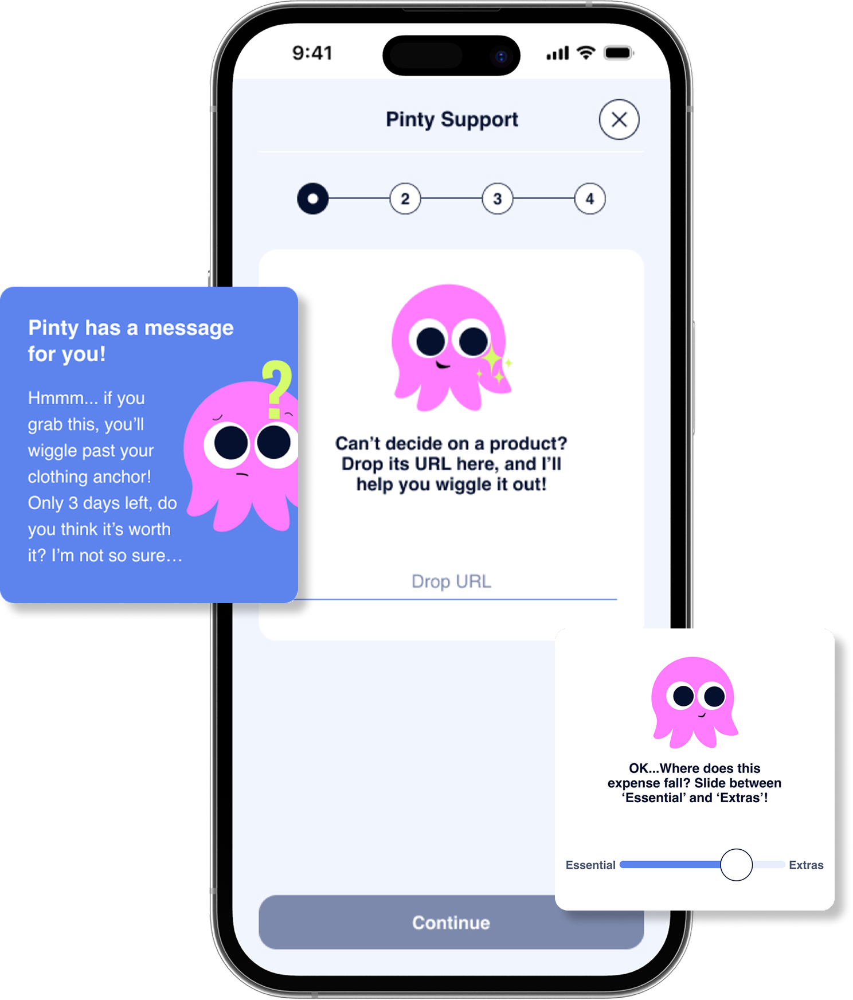
Helps reduce impulsive shopping by supporting users in deciding whether or not to make a purchase.
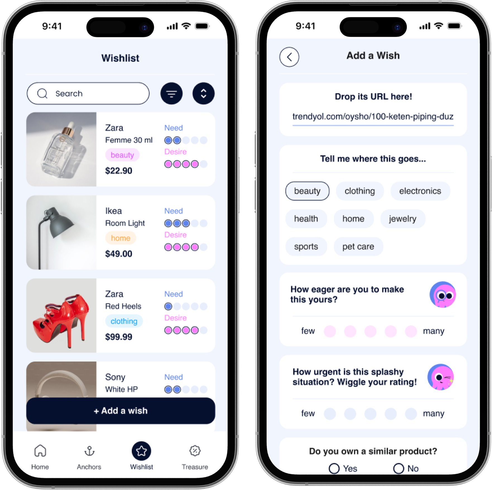
Organizes wishlist items based on the user's perceived level of necessity and desire.
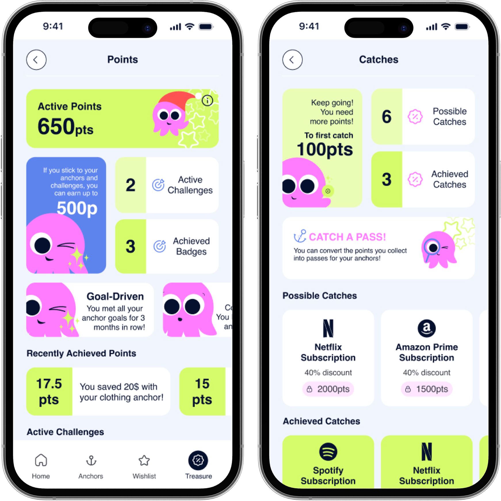
A reward system where users earn points by sticking to their goals and spending limits, then turn those points into discounts and badges.